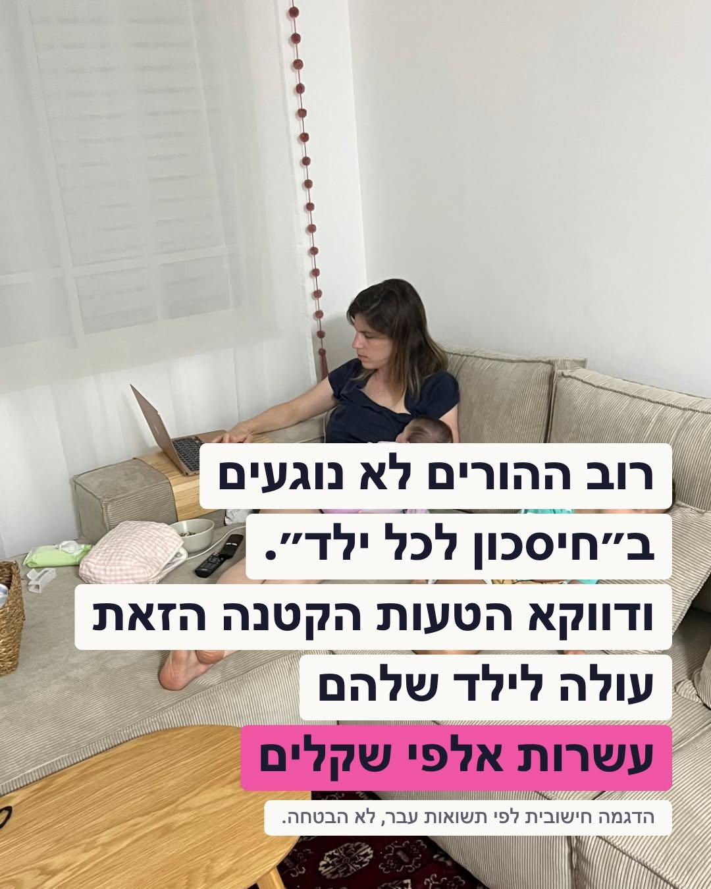
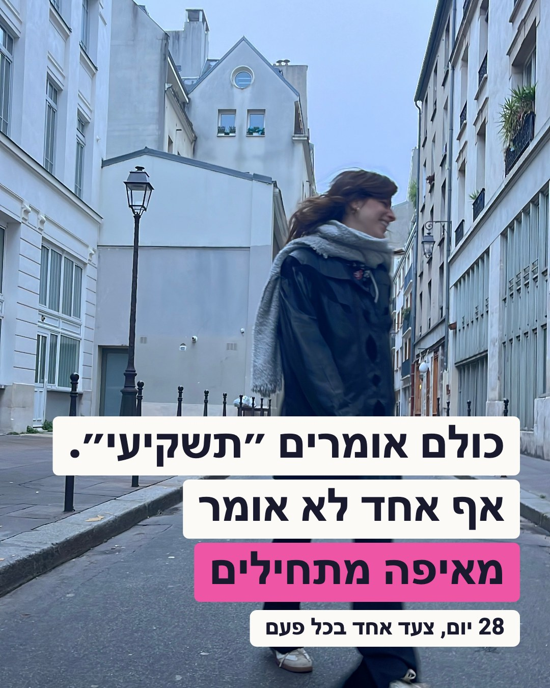
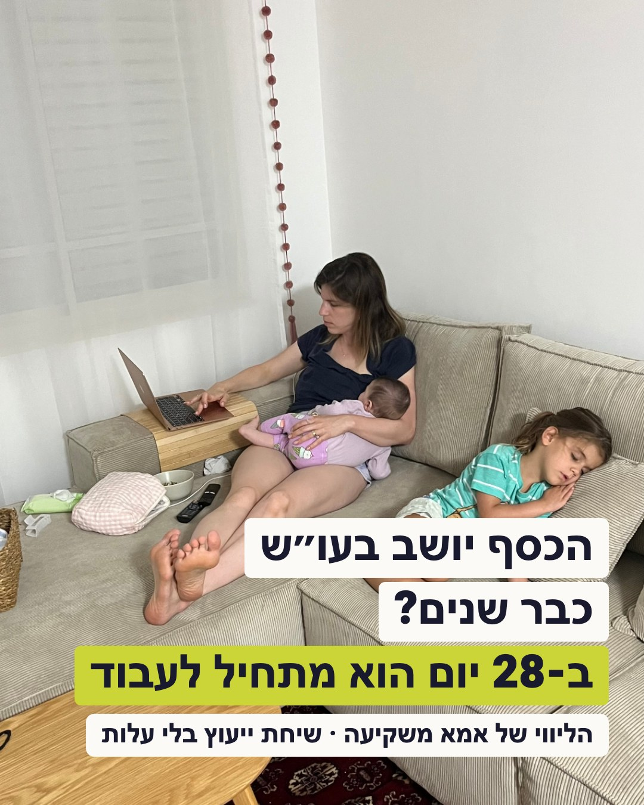
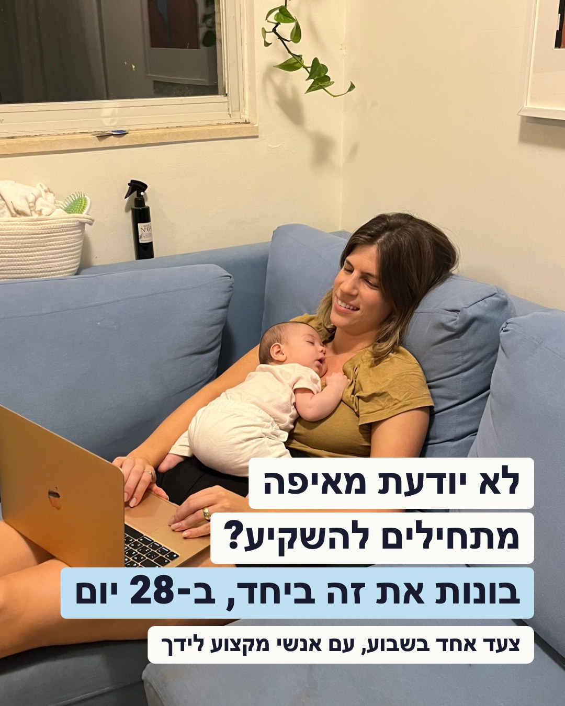
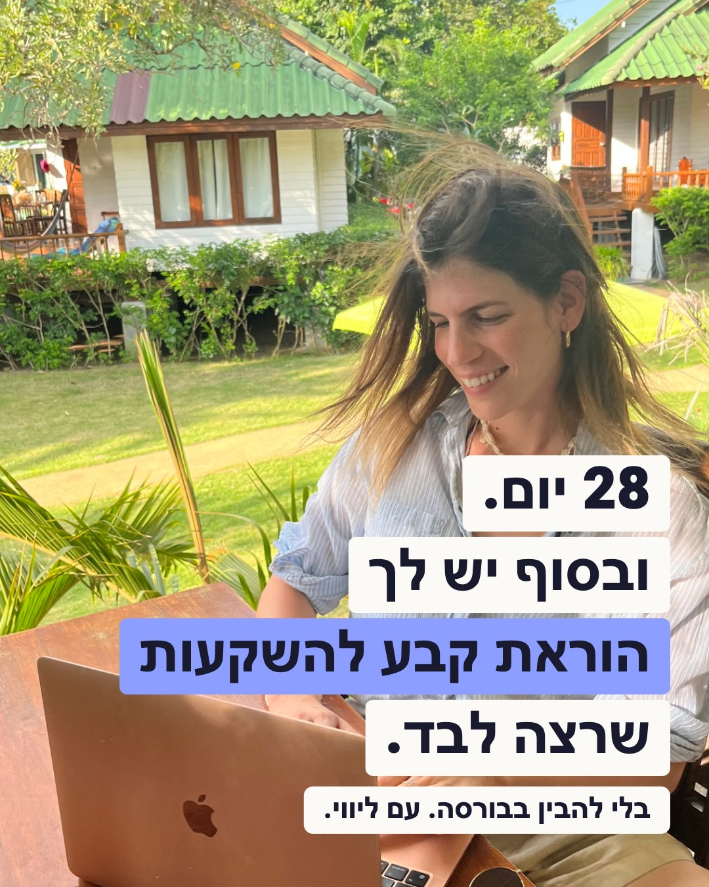
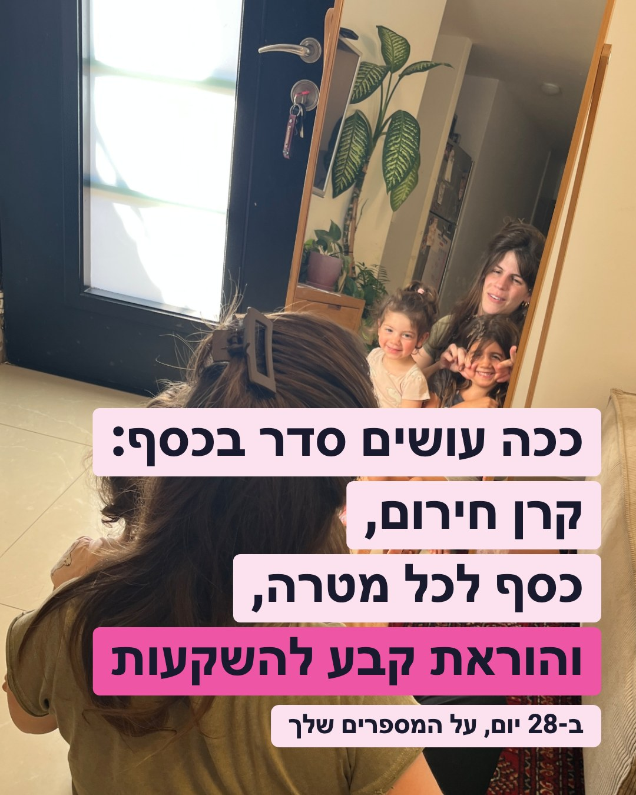
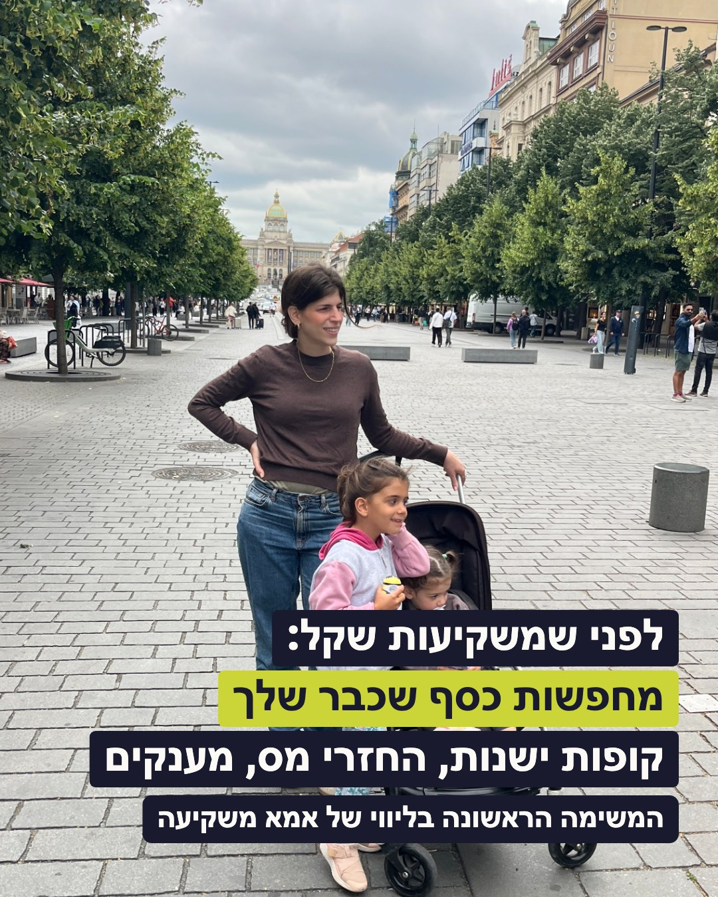
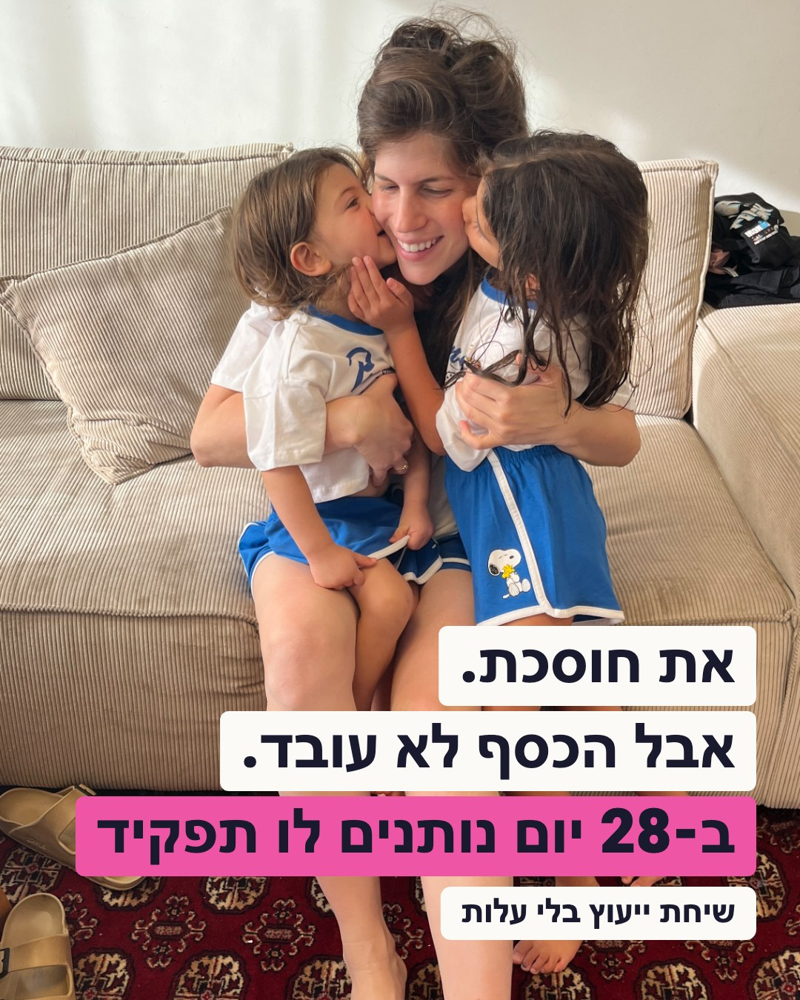

הדף livui.mominvest.co.il/call ממיר, אבל אין אליו תנועה: 152 כניסות וליד אחד בין 24/10 ל-05/11. המודעה מוכרת רק את הקליק לשיחה בלי עלות, לא את הליווי. הדף הזה הוכן כדי לקבל עליו פידבק לפני שהקמפיין עולה.
מה כבר עבד בחשבון שלך (2026)
שלוש המודעות הכי זולות השנה. המשותף להן: תמונה אמיתית שלך, טקסט בבלוקים על התמונה, מספר מדויק אחד, וקופי שנפתח בסצנה בגוף ראשון. הקריאייטיבים למטה בנויים באותו סגנון.

1.2 ₪ ללידחיסכון לכל ילד · "רוב ההורים לא נוגעים" · 2,516 לידים, CTR 14%
8.5 ₪לנרשמת לוובינר (pic_Dreams, 4.10) · עלה ל-18 ₪ אחרי שלושה מחזורים
32 ₪לליד בקמפיין 500K (סרטון v6) · המודעה שגילגלה הכי הרבה תקציב
לא נמדדליד לשיחת ייעוץ. זו פעולה כבדה יותר, לצפות ליותר מ-30 ₪ בהתחלה
השיטה של יהב רובין בקופי: הוק ← "גם אני הייתי שם" ← מה ניסיתי ולא עבד ← מה גיליתי ← "ארזתי לך את זה" ← קריאה לפעולה אחת. הטקסטים הראשיים למטה בנויים ככה, במילים מהדף שלך.
הקריאייטיבים
סבב שני (06/11): קריאייטיב 1 אושר, השאר נכתבו מחדש כך שהמסר יהיה ברור בשורה אחת: מה הבעיה, ומה מקבלים (28 יום, הוראת קבע שרצה לבד, שיחת ייעוץ בלי עלות). כל התמונות ב-4:5 (1080×1350), מוכנות להעלאה.

1 כולם אומרים "תשקיעי"
מומלץ · ההוק הרחב
כותרת הקישור
כולם אומרים "תשקיעי". אף אחד לא אומר מאיפה.
טקסט ראשי
גרסה א (הסיפור שלך)
כפתור
מידע נוסף → לשיחת ייעוץ בלי עלות
תמונה
IMG_9176 · הליכה ברחוב, מבט הצידה
למה: התסכול מהרעש שבחוץ מוכר לכל אמא, ולא מאשים אותה. מתאים גם למי שלא מכירה אותך.

2 הכסף יושב בעו"ש כבר שנים?
התמונה של 1.2 ₪ לליד
כותרת הקישור
ב-28 יום הכסף מתחיל לעבוד. שיחת ייעוץ בלי עלות.
טקסט ראשי
גרסה ג (סוף החודש)
כפתור
מידע נוסף
תמונה
תמונה 1 לוובינר · הספה עם הבנות
המסר: הבעיה (כסף שיושב) והפתרון (28 יום) באותו פריים. שאלה שכל אחת עונה עליה "כן" בלי לחשוב.

3 לא יודעת מאיפה מתחילים?
כותרת הקישור
צעד אחד בשבוע, עם אנשי מקצוע לידך
טקסט ראשי
גרסה ב ("אני לא מבינה בהשקעות")
כפתור
מידע נוסף
תמונה
IMG_7178 · ספה, תינוקת, מחשב
המסר: החסם הכי נפוץ מהשאלות בדף ("חסר לי ידע"), והתשובה: לא לבד, ולא בבת אחת.

4 28 יום, ובסוף הוראת קבע שרצה לבד
מומלץ · ההצעה עצמה
כותרת הקישור
בלי להבין בבורסה. עם ליווי ואנשי מקצוע.
טקסט ראשי
גרסה ב
כפתור
מידע נוסף
תמונה
תמונה 2 לוובינר · מחשב בגינה, חיוך
המסר: מה מקבלים בסוף, במילה אחת של הדף. כולם מלמדים השקעות, את נותנת מנגנון.

5 ככה עושים סדר בכסף
מומלץ · השיטה
כותרת הקישור
ב-28 יום, על המספרים שלך. שיחת ייעוץ בלי עלות.
טקסט ראשי
גרסה ב
כפתור
מידע נוסף
תמונה
IMG_8143 · המראה עם הבנות (התמונה מסרטון v6 של 500K)
המסר: השיטה בשלוש מילים, כמו בדף. מי שלא יודעת מה זה "סדר בכסף" רואה מיד.

6 לפני שמשקיעות שקל
כותרת הקישור
המשימה הראשונה בליווי: קופות ישנות, החזרי מס, מענקים
טקסט ראשי
גרסה ג
כפתור
מידע נוסף
תמונה
IMG_6599 · פראג עם הבנות (התמונה של 2.7 ₪ לליד)
המסר: עונה ל"אין לי כסף להתחיל". ההוק של ציד האוצר עבד במדריך, כאן בלי סכום כדי לא להיתפס כהבטחה.

7 את חוסכת. אבל הכסף לא עובד.
כותרת הקישור
ב-28 יום נותנים לכל שקל תפקיד. שיחת ייעוץ בלי עלות.
טקסט ראשי
גרסה ג
כפתור
מידע נוסף
תמונה
IMG_8262 · הנשיקות על הספה
המסר: מחמיא על מה שכבר עשתה, ואומר במדויק מה חסר ומה עושים עם זה.
שלושת הטקסטים הראשיים
נכתבו בג'מיני לפי בריף שלי ועברו עריכה שלי מול הדף. בלי תאריך, בלי מחיר, בלי תשואות. כל אחד נגמר באותה קריאה לפעולה.
גרסה א · הסיפור שלך
לקריאייטיב 1
במרץ 2020 הייתי בהיריון הראשון,
ונכנסנו לסגר הראשון.
היה לי עסק מלא ועמוס לכלות.
וביום אחד הכל נעצר.
כל הביטחון שחשבתי שיש לי נעלם ברגע.
ישבתי בבית והבנתי:
אף אחד פשוט לא עשה לי סדר בכסף.
אז יצאתי ללמוד, לבדוק,
ולבנות מנגנון שעובד בשביל המשפחה שלי.
וגיליתי שהכסף לא צריך עוד מאמץ.
הוא צריך סדר.
ארזתי את כל הדרך הזאת
לתהליך פשוט של 28 יום,
עם אנשי מקצוע בעלי רישיון לידך.
בלי להפוך למומחית.
בסוף יש לך הוראת קבע אחת שרצה לבד.
לשיחת ייעוץ בלי עלות, מכאן 👇
גרסה ב · "אני לא מבינה בהשקעות"
לקריאייטיבים 3, 4 ו-5
את אחראית. את חוסכת.
את שומרת על הכסף של המשפחה.
אבל כל פעם שאת מנסה להשקיע אותו,
את נתקעת בים של מושגים,
דעות סותרות,
ואנשים שרוצים למכור לך משהו.
לקח לי שנים להבין
שלא צריך להיות מומחית
בשביל שהכסף יעבוד.
הכסף לא צריך עוד מאמץ. הוא צריך סדר.
בליווי של 28 יום יש משימה אחת בשבוע,
ואנשי מקצוע בעלי רישיון שמלווים אותך.
המשימה הראשונה בכלל:
למצוא כסף שכבר שלך.
בסוף יש הוראת קבע אחת שרצה לבד,
בזמן שאת ממשיכה בחיים שלך.
לשיחת ייעוץ בלי עלות, מכאן 👇
גרסה ג · סוף החודש
לקריאייטיבים 2, 6 ו-7
את יושבת בערב מול האפליקציה של הבנק
ומסתכלת על העו"ש.
הכסף שם. עבדת קשה בשבילו.
והוא פשוט יושב.
כל חודש את אומרת לעצמך
שהחודש תטפלי בזה.
ואז מגיעים החיים, וזה נדחה.
לעוד חודש. ועוד אחד.
אז הנה משהו שייקח ממך את הלחץ:
הכסף לא צריך עוד מאמץ. הוא צריך סדר.
בליווי של 28 יום מתחילות
דווקא מלמצוא כסף שכבר שלך.
משימה קצרה אחת בשבוע,
ושיחה אישית עם אנשי מקצוע בעלי רישיון.
בסוף יש מסילה אחת שרצה לבד.
לשיחת ייעוץ בלי עלות, מכאן 👇
לפני שעולים לאוויר
מדידה: לידים נספרים מ-livui_fit עם source=premium, לא מ"לידים" של מטא. ייחוס קליק בלבד (בלי 1d view), כמו שלמדנו במחזור 13.10.
קהל: נשים 28–45, ישראל, בלי אינטרסים, להחריג רוכשות הליווי ומי שכבר בפורטל. תקציב התחלה 100 ₪ ליום, העלאות של עד 20%.
בלי תאריך בקופי (29.11 נשאר בדף), כדי שהמודעה תמשיך ללמוד גם במחזור הבא.
שתי דליפות פתוחות: מי שהשאירה פרטים ולא קבעה שיחה לא מקבלת הודעה (תבנית call_nobook לא הוגשה למטא), ותזכורת יום לפני לא יוצאת מאז 28/10 (daphne_24h_v2 נדחתה). עם יותר לידים, זה מאבד שיחות. אפשר לטפל במקביל להעלאת הקמפיין.